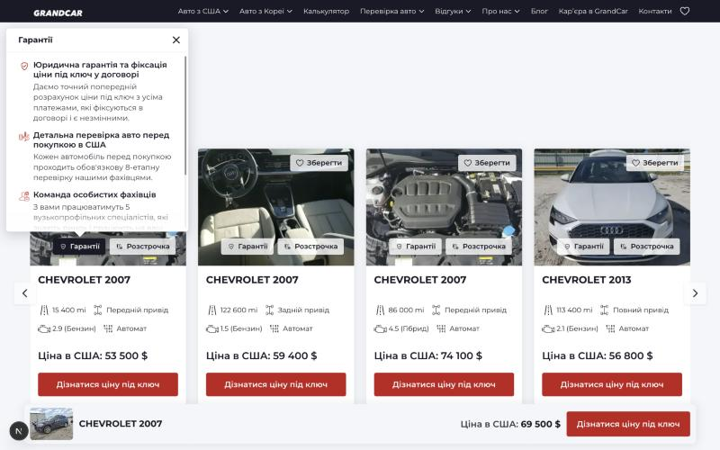
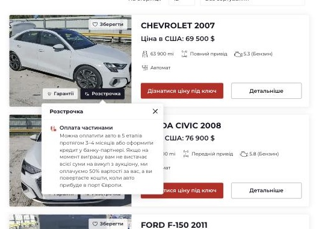
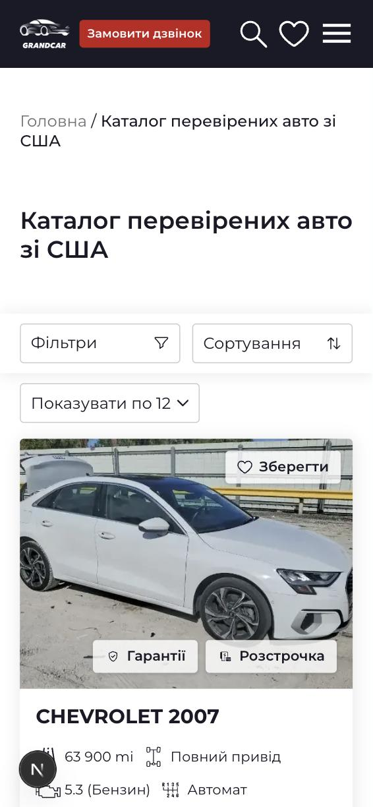
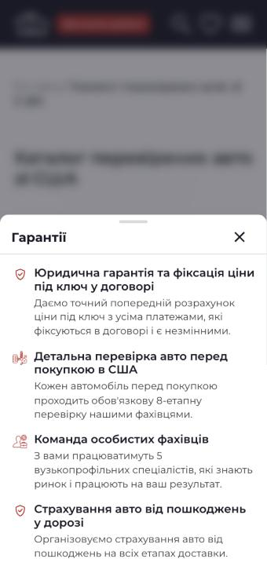
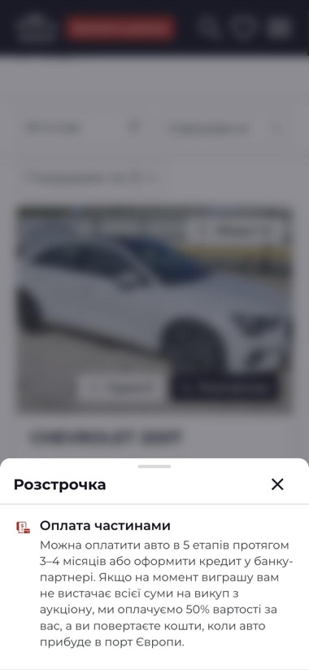
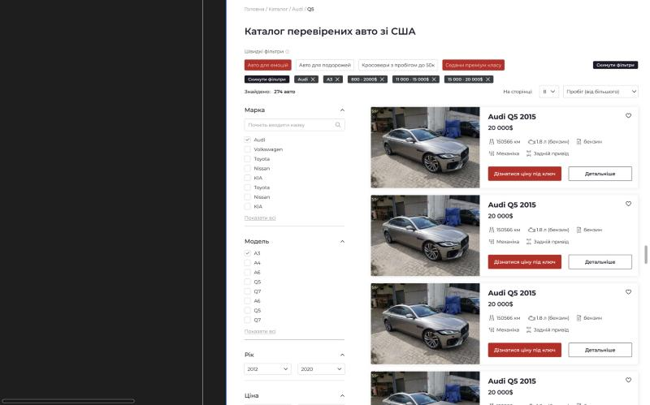
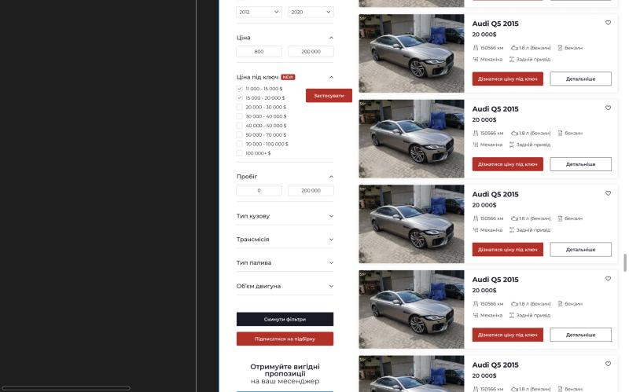
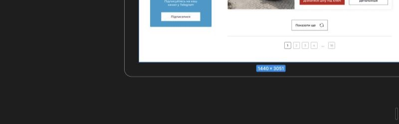
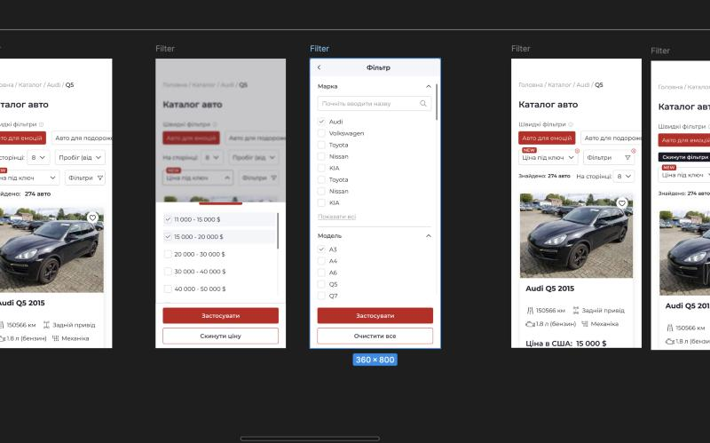
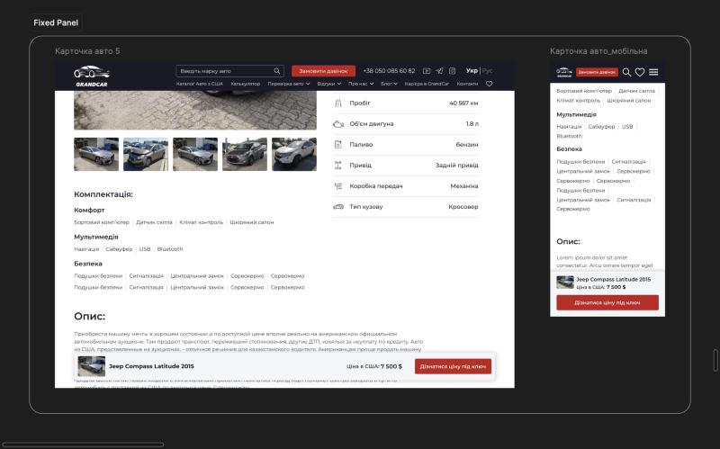

Коротко
Беремо в роботу лише сторінку Design файла Figma «GrandCar» — так підтвердив Сергій 12.11: «тільки те, що на сторінці Design». Інші сторінки файла (Exploration, KIT, Thumbnail) не беремо. Окремого ТЗ до дизайну немає, питання уточнювалися по ходу. Зараз на WordPress упроваджують лише мобільні фільтри з Design.
Як читати. Розділ 1 — робимо за дизайном. Розділ 2 — у нас свій підхід, перевірений на iOS і Android: що лишаємо, що не беремо, що додаємо. У кожному пункті — питання з наскрізними номерами П1–П34; у розділі 3 вони зібрані одним списком, відповідати можна коротко: «П7 — так, П12 — галочки». Зеленим — відповіді, які вже є.
Шрифти й розміри
Значення зняті з панелі властивостей шарів сторінки Design (вхід у Figma з правом перегляду; Dev Mode недоступний). Шрифт скрізь Montserrat. Збережених стилів тексту у файлі немає; кольори — змінні, їхні значення збігаються з нашими токенами. Розміри кнопок і полів не знімали — це компоненти зі сторінки KIT.
| Елемент | Зараз у нас | У дизайні | |
|---|---|---|---|
| Заголовок першого екрана | до 52 (30–52), 700, 1,2 | Montserrat 700, 52, 120 % | збігається |
| Заголовок розділу (H2), комп'ютер | 32, 600, 1,2 | 600, 32, 120 % | збігається |
| Заголовок розділу (H2), телефон | 24, 600, 1,2 | 600, 24, 120 % | збігається |
| Надзаголовок «Чому компанії» | немає | 600, 18, 24 px | інакше |
| Вступний текст розділу, комп'ютер | у «довіряють» 18, 1,5 | 500, 20, 120 % | інакше |
| Вступний текст, телефон | 16, 1,5 | 500, 16, 150 % | збігається |
| Цифри «3 200+», «до 37 %» | немає (нове) | 600, 24, 150 %, червоний | інакше |
| Підпис під цифрою | немає (нове) | 600, 18, 120 % | інакше |
| Звичайний текст, комп'ютер / телефон | 16 / 14, 1,5 | 400, 16 / 14, 120 % | інакше |
| Питання FAQ (комп'ютер) | 20, 500, 1,5 | 500, 20, 150 % | збігається |
| «Не знайшли відповідь?» заголовок / текст | немає (нове) | 600 20 / 500 18, 140 % | інакше |
| Рядок способу зв'язку | немає (нове) | 500, 16, 100 % | інакше |
| Кейс: «Історія реального досвіду …» | немає (нове) | 600, 16, 120 %, червоний | інакше |
| Кейс: рядки цифр / підписники | 18 / 14 | 500 16 / 500 14 | інакше |
| Поле: текст / підказка | 16 | 400, 16, 22 px, сірий #838587 | збігається |
| Пункт списку | 14 | 500, 14, 18 px, #393E41 | збігається |
1. Під виконання — зараз у нас → у дизайні
1.1 Кейси клієнтів «Авто зі США в Україну під ключ – це GrandCar» · фрейм у Figma
- Зараз у насКомп'ютер: стрічка карток зі стрілками; на фото мітка ролі («БЛОГЕР»), «Модель 2020 для Клієнта», три рядки цифр, кнопка «Детальніше». Телефон: одна картка на екран, свайп.
- У дизайні — робимо такКартка «History Card new» 424 × 618: на фото аватар, нік і кількість підписників, угорі праворуч біла плашка типу («Спортивний блогер»); назва; червоний рядок «Історія реального досвіду <ім'я>»; «Виграли в США у 2024 році» і «Ціна під ключ 20 000$» — дві сірі плашки поруч; «Вигода: 3 400 $» на всю ширину; темна кнопка «Читати історію» з іконкою.
- Як робимоСтрічку лишаємо нашу (свайп, стрілки, клавіатура, пауза автопрокрутки) — змінюється картка.
- Питання
- П4. Аватар, нік, підписники й тип — це поля кожного кейсу в адмінці? Що показувати, якщо клієнт не блогер?
Зараз у нас: Лише мітка ролі. · У дизайні: «@Maks_Prokopenko», «590K підписників», «Спортивний блогер». - П5. Типи («Спортивний блогер», «Ведуча»…) — фіксований список чи довільний текст?
Зараз у нас: Мітка ролі з даних кейсу. · У дизайні: Плашка з типом. - П6. Куди веде «Читати історію» — сторінка кейсу, відео чи вікно?
Зараз у нас: «Детальніше» веде на сторінку кейсу. · У дизайні: Дії в прототипі немає.
- П4. Аватар, нік, підписники й тип — це поля кожного кейсу в адмінці? Що показувати, якщо клієнт не блогер?
Комп'ютер
Телефон
У дизайні
Не намальовано.
1.2 «Чому компанії Grandcar довіряють» і форма «Підберемо авто під ваш бюджет» · фрейм у Figma
- Зараз у насКомп'ютер: ліворуч три абзаци («Надійні», «Чесні», «Експертні»), праворуч форма з підписами над лінією: бюджет, тип кузова, рік, ім'я, телефон, «Отримати підбір». Телефон: абзаци в одну колонку, форма нижче.
- У дизайні — робимо такЛіворуч 4 цифри з іконками (3 200+ клієнтів, 8 етапів перевірки, 4 відділи, до 37 % економії) і плашка «Офіційно. Прозоро. Без прихованих платежів». Праворуч форма в рамках: «Тип кузова» — список із галочками, «Рік авто», «Ваш бюджет, $», «Ваше ім'я», телефон із прапорцем +380, іконки Telegram, WhatsApp, Viber і галочка «Зручніше писати в чаті», «Отримати розрахунок». Телефон: картки цифр у ряд із прокруткою вбік, форма нижче.
- Питання
- П7. Цифри 3 200+, 8, 4, до 37 % і підписи — сталі чи їх змінює менеджер в адмінці?
Зараз у нас: Три абзаци тексту. · У дизайні: 4 цифри з іконками. - П8. На телефоні картки цифр гортаються вбік свайпом?
Зараз у нас: — · У дизайні: Друга картка йде за правий край. - П9. «Тип кузова»: можна вибрати кілька типів одразу?
Зараз у нас: Один тип. · У дизайні: Список із галочками біля кожного типу. - П10. Галочка «Зручніше писати в чаті»: у який месенджер пише менеджер, якщо клієнт її відмітив?
Зараз у нас: Поля немає; у формі ядра теж — потрібна задача бекенду. · У дизайні: Три іконки й одна галочка.
- П7. Цифри 3 200+, 8, 4, до 37 % і підписи — сталі чи їх змінює менеджер в адмінці?
Комп'ютер
Телефон
1.3 «Ви часто запитуєте» і «Не знайшли відповідь?» · фрейм у Figma
- Зараз у насКомп'ютер: питання-акордеон у білих плашках (заокруглення 4, відступи 24 × 28, відповідь 20), праворуч форма «Якщо у вас залишилися питання…». Телефон: ті самі плашки, форма нижче.
- У дизайні — робимо такПлашки із заокругленням 8, відступ 20, питання 20/500, відповідь 18/400 сіра #393E41. Праворуч «Не знайшли відповідь?»: «Напишіть нам в Telegram / WhatsApp / Viber», «Зателефонуйте нам», «Замовте дзвінок» розкритий — поле телефону й «Замовити дзвінок»; унизу «Ваші дані в безпеці. Конфіденційно. Без спаму». Телефон: питання плашками, «Не знайшли відповідь?» під ними.
- Як робимоАкордеон лишаємо наш (одне відкрите питання, клавіатура, розмітка FAQPage для Google), міняємо вигляд плашки: заокруглення 4 → 8, відступи → 20, відповідь → 18/400 сіра, шеврон — тонка лінія. Тінь і питання 20/500 уже як у дизайні.
- Питання
- П11. Telegram, WhatsApp, Viber ведуть у бот чи в чат із менеджером?
Зараз у нас: — · У дизайні: Рядки «Напишіть нам в …». - П12. «Замовте дзвінок» завжди розкритий чи розкривається натисканням?
Зараз у нас: — · У дизайні: Намальовано розкритим. - П13. Блок замінює форму питання на всіх сторінках чи лише на головній?
Зараз у нас: Форма питання — на головній і сторінках послуг. · У дизайні: Намальовано на головній.
- П11. Telegram, WhatsApp, Viber ведуть у бот чи в чат із менеджером?
Комп'ютер
Телефон
1.4 Картка каталогу й підказки «Гарантії» / «Розстрочка» — беремо нашу готову підказку · фрейм у Figma
- Зараз у насКомп'ютер: на фото «♡ Зберегти», унизу фото плашки «Гарантії» і «Розстрочка»; натискання відкриває нашу підказку — віконце зі списком і хрестиком. «Гарантії» — 4 пункти, «Розстрочка» — 1. Телефон: ті самі плашки, підказка відкривається шторкою знизу.
- У дизайні — робимо такКомп'ютер (список): серце праворуч від назви (пропонуємо лишити на фото — П14б), плашки «Гарантії» і «Розстрочка» на фото, натискання відкриває віконце зі списком під плашкою. У «Розстрочки» першим «Оплата частинами», далі гарантії. Телефон: серце на фото вгорі праворуч, ті самі плашки й віконце поверх фото.
- Лишаємо
- Нашу підказку повністю: віконце на комп'ютері, шторка знизу на телефоні, закриття хрестиком, Esc і кліком повз, робота з клавіатури
- Плашки «Гарантії» і «Розстрочка» на фото — у дизайні вони ті самі
- Не беремо з дизайну
- Хмаринку поверх фото на телефоні — накриває картку й закривається випадковим дотиком; у нас шторка
- Додаємо
- Тексти списків із дизайну, у «Розстрочки» — «Оплата частинами» + гарантії — за відповіддю на П15а
- Серце замість «♡ Зберегти» — за відповіддю на П14а
- Питання
- П14а. Серце без підпису «Зберегти» — прибираємо підпис на всіх картках сайту?
Зараз у нас: «♡ Зберегти» на фото. · У дизайні: Лише серце. - П14б. Пропонуємо серце скрізь лишати на фото вгорі праворуч — і в картках, і в рядку списку на комп'ютері, без перенесення до назви. Так підходить?
Зараз у нас: на фото вгорі праворуч у всіх картках. · У дизайні: на телефоні — на фото; у рядку списку на комп'ютері — праворуч від назви; вертикальної картки для комп'ютера немає. - П15а. У дизайні інші тексти підказок, ніж зараз на сайті, і умови в них розходяться. Беремо тексти з дизайну? Якщо так — умови розстрочки й перевірки там актуальні?
Зараз у нас: «Гарантії» — 4 пункти, 8-етапна перевірка, 5 вузькопрофільних спеціалістів; «Розстрочка» — 5 етапів за 3–4 місяці, ми оплачуємо 50 % вартості. · У дизайні: заголовок «Чому варто замовити авто в Grandcar», 6 пунктів: повна діагностика, особистий фахівець, поетапна оплата 2–3 місяці або після прибуття в Україну (повний текст — під скрінами). - П15. Списки «Гарантії» і «Розстрочка» для авто з Кореї — ті самі тексти?
Зараз у нас: У нас тексти для США й Кореї різні. · У дизайні: Намальовано лише для США.
- П14а. Серце без підпису «Зберегти» — прибираємо підпис на всіх картках сайту?
Комп'ютер
Зараз у нас

Зараз у нас, комп'ютер

Зараз у нас: «Розстрочка», комп'ютер (рядок списку)
Телефон
Зараз у нас

Зараз у нас, телефон

Зараз у нас: шторка

Зараз у нас: шторка «Розстрочка»
Тексти підказки в дизайні повністю
У Figma список прокручується, тому на скрінах видно лише частину. Заголовок вікна: «Чому варто замовити авто в Grandcar».
- Оплата частинами — Оплата частинами допоможе вам досягти бажаного результату без зайвих фінансових навантажень. (лише в «Розстрочці», першим пунктом)
- Юридична гарантія на всіх етапах — Супроводжуємо від підбору до постановки на облік
- Фіксуємо ціну під ключ у договорі — Ніяких прихованих витрат і непередбачених доплат
- Особистий фахівець на вашому боці — Експерт, який знає ринок і працює на ваш результат
- Перевірка авто перед покупкою — Повна діагностика, перевірка історії та всіх документів
- Оплата зручно і без ризиків — Поетапна оплата 2–3 місяці або після прибуття в Україну
- Страхування та підтримка після покупки — Страхуємо авто від ризиків і допомагаємо з будь-якими питаннями після доставки
1.5 Підказки «i» на сторінці лота — теж наша підказка · фрейм у Figma
- Зараз у нас«Ціна в США: 69 500 $» без значка, кнопка «Дізнатися ціну під ключ» (і «Розрахувати ремонт», де він є); підказок немає.
- У дизайні — робимо такКомп'ютер: «i» біля «Ціна в США» — «Ціна за яку в середньому можна виграти авто на аукціоні»; «i» біля «Розрахувати ремонт» — «Наші фахівці з дефектування розрахують вартість ремонту…». Телефон: «i» біля ціни й рядок «Як розраховується вартість? ⓘ» під кнопками.
- Як робимоЗначки відкривають нашу підказку: віконце на комп'ютері, шторка на телефоні — як «i» біля ціни Кореї.
- Питання
- П16. Тексти обох підказок остаточні?
Зараз у нас: — · У дизайні: Тексти в макеті.
- П16. Тексти обох підказок остаточні?
Комп'ютер
Телефон
1.6 Вікно «Ціна під ключ» · фрейм у Figma
- Зараз у насКомп'ютер: ліворуч фото менеджерів, праворуч заголовок, «Авто», поля з підписом над лінією, кнопка. Телефон: вікно без фото.
- У дизайні — робимо такКомп'ютер: ліворуч фото цього авто, поверх — «Прорахована ціна під ключ включає:» (4 пункти); праворуч форма в рамках, телефон із прапорцем, «Отримати прорахунок». Телефон: фото з назвою авто вгорі, нижче форма, «Прорахована ціна під ключ включає» розкривається.
- Як робимоВікно — наш Modal (фокус усередині, Esc і «назад» закривають); розкриття — наш Accordion.
- Питання
- П17. Фото — перше фото цього авто з галереї?
Зараз у нас: Фото менеджерів. · У дизайні: Фото авто із затемненням. - П18. Чотири пункти «включає» однакові для всіх авто?
Зараз у нас: — · У дизайні: 4 пункти.
- П17. Фото — перше фото цього авто з галереї?
Комп'ютер
Телефон
1.7 Вікно переваг «Переваги, які ви отримуєте замовляючи авто у Grandcar» · фрейм у Figma
- Зараз у насТакого вікна немає.
- У дизайні — робимо такКомп'ютер: 6 плиток (юридична гарантія, фіксація ціни в договорі, особистий фахівець, перевірка перед покупкою, «Оплата зручно і без ризиків», страхування); є вигляд із формою знизу. Телефон: список-акордеон — 6 пунктів з іконкою й стрілкою, перший розкритий; форми немає.
- Як робимоОдне вікно, форма — за прапорцем.
- Питання
- П19. Коли вікно відкривається: натисканням десь на сторінці, за таймером, при виході зі сторінки? Скільки разів за візит?
Зараз у нас: Вікна немає. · У дизайні: Дії в прототипі немає. - П20. Де показуємо вигляд із формою, де без?
Зараз у нас: — · У дизайні: Комп'ютер — два вигляди.✔ Сергій, 12.11: «ця форма буде лише на сторінках не під лідген — про компанію, відгуки тощо, щоб у формі одразу дати розуміння переваг; це варіант, який можемо пробувати». - П21. На телефоні вікно з формою виходить довгим: форма одразу йде за екран, розкриті пункти й клавіатура ще подовжують його. Показуємо на телефоні вигляд без форми (як у Design) і даємо кнопку до форми?
Зараз у нас: — · У дизайні: Телефон у Design — без форми.
- П19. Коли вікно відкривається: натисканням десь на сторінці, за таймером, при виході зі сторінки? Скільки разів за візит?
Комп'ютер
Зараз у нас
Такого немає.
Телефон
Зараз у нас
Такого немає.
1.8 Плаваючі кнопки зв'язку й віджети · фрейм у Figma
- Зараз у насНемає.
- У дизайні — робимо такКомпоненти: Quick Contact — WhatsApp, Viber, Telegram, чат і розкритий вигляд «Ми на зв'язку та готові допомогти!»; Phone — «Бажаєте, зателефонуємо Вам за 30 секунд?»; вікно чату «Введіть повідомлення». На макетах головної кнопки стоять у нижніх кутах.
- Як робимоВідповідь Сергія 12.11: на головній — обидва віджети, на сторінці авто — лише швидке листування (над нижньою панеллю авто).
- Питання
- П22. На яких сторінках кнопки й чи є вони на телефоні?
Зараз у нас: Немає. · У дизайні: Намальовано на головній.✔ Сергій, 12.11 (голосове): на головній — обидва віджети (дзвінок і месенджер); на сторінці авто — наприклад, лише віджет швидкого листування. - П23. Які месенджери зрештою і де який?
Зараз у нас: — · У дизайні: У компонентах WhatsApp, Viber, Telegram, чат. - П24. Коли кнопка розкривається в «Ми на зв'язку…» і коли згортається?
Зараз у нас: — · У дизайні: Є розкритий вигляд. - П25. Вікно чату: чий сервіс, хто відповідає, куди йдуть повідомлення?
Зараз у нас: Чату немає. · У дизайні: Поле «Введіть повідомлення». - П26. «Зателефонуємо Вам за 30 секунд» — обіцянку підтверджено? Що поза робочим часом?
Зараз у нас: — · У дизайні: Кнопка з текстом. - П27. На сторінці авто віджет листування стоїть над нижньою панеллю авто — так підходить? І що на інших сторінках (каталог, відгуки, про компанію): обидва віджети, один чи нічого?
Зараз у нас: Унизу сторінки авто — панель «Дізнатися ціну під ключ», у каталозі на телефоні — «Показати» в шторці. · У дизайні: Кнопки в нижніх кутах; панель авто не врахована.
- П22. На яких сторінках кнопки й чи є вони на телефоні?
Комп'ютер
Зараз у нас
Такого немає.
Телефон
У дизайні
Не намальовано.
2. Лишаємо наше, не беремо зайве, додаємо нове
Тут у нас робочий підхід, перевірений на iOS і Android і затверджений Ярославом. Дизайн його розширює, а не замінює.
2.1 Фільтри каталогу — комп'ютер і телефон · фрейм у Figma
- Зараз у насКомп'ютер: розділи згорнуті, відкриваються по одному (пошук, 8 значень, «Показати ще 12»); вибране — під назвою розділу зі «Скинути» й чипами над списком; «Модель» після марки; список і адреса оновлюються одразу; «Скинути фільтри» внизу; «Показати ще», номери й стрілки ‹ ›. Телефон: «Фільтри» з лічильником, «Сортування», «Показувати по 12», «Скинути»; шторка: розділи з вибраним під назвою, розділ на весь екран («Усі фільтри» — назад), «Вибрано N», «Скинути фільтри», «Показати»; галочки 24 у рядках 56, повзунок із кружком 28 і зоною 48, поля 56 із «$».
- У дизайні — робимо такКомп'ютер: «Швидкі фільтри» (4 добірки, вибрано дві одразу) і «Скинути фільтри»; чипи вибраного; «Знайдено: 274 авто», «На сторінці», сортування. Колонка: Марка й Модель — пошук, галочки, «Показати всі»; Рік — два списки; Ціна й Пробіг — два поля; «Ціна під ключ» (NEW) — галочки й «Застосувати»; унизу «Скинути фільтри», «Підписатися на підбірку», Telegram-блок; другий вигляд колонки — усе згорнуто. Телефон: «Швидкі фільтри», «Ціна під ключ» і «Фільтри» з червоними лічильниками, чипи; «Фільтри» — екран «Фільтр» з усіма розділами розкритими, «Застосувати» й «Очистити все»; «Ціна під ключ» — шторка з галочками.
- Як робимоЗа словами Сергія (12.11), мобільні фільтри з Design (фрейм 393-6879) зараз упроваджують на WordPress — «більше нового нічого не розробляли».
- Лишаємо
- Застосування одразу на комп'ютері, без «Застосувати»
- Шторку по розділах на телефоні, «Вибрано N», «Показати»
- Повзунок із полями, збільшені галочки й рядки (12.11)
- Стрілки ‹ › біля номерів сторінок
- Не беремо з дизайну
- Кнопки «Застосувати», «Очистити все», «Скинути ціну»
- Один екран з усіма розкритими розділами на телефоні — 10+ розділів, до потрібного довго гортати
- Рік двома списками, ціну без повзунка
- Додаємо
- «Швидкі фільтри»
- Розділ і кнопку «Ціна під ключ» (NEW) з лічильником; на телефоні кнопка відкриває нашу шторку на цьому розділі
- Чипи вибраного над списком і на телефоні
- «Знайдено N авто»
- «Підписатися на підбірку»
- Telegram-блок під колонкою (на /auctions/ у нас є)
- Питання
- П28. Згодні: на комп'ютері застосовуємо одразу без «Застосувати», на телефоні — наша шторка по розділах із «Показати»?
Зараз у нас: Одразу; шторка по розділах. · У дизайні: «Застосувати», один екран з усіма розділами. - П29. Колонка на комп'ютері: розділи розкриті одразу чи згорнуті? У Design є обидва вигляди.
Зараз у нас: Згорнуті. · У дизайні: Два вигляди. - П30. «Швидкі фільтри»: список добірок, хто його веде, що входить у кожну? Натискання замінює вибрані фільтри чи додається до них?
Зараз у нас: Немає. · У дизайні: 4 добірки, дві вибрано одразу. - П31. «Ціна під ключ»: діапазони фіксовані? Ціну під ключ для фільтра рахує бекенд — погоджено?
Зараз у нас: Є «Ціна в США $». · У дизайні: Галочки 11 000–15 000 $ … 100 000+ $. - П32. Червоні цифри на кнопках телефону — кількість вибраних значень чи розділів?
Зараз у нас: «Фільтри 1» — значень. · У дизайні: «2» і «3». - П33. «Підписатися на підбірку»: що після натискання і як часто приходять добірки?
Зараз у нас: Немає. · У дизайні: Червона кнопка під колонкою. - П34. Рік — два списки чи наш повзунок із полями?
Зараз у нас: Повзунок із полями. · У дизайні: Два списки.
- П28. Згодні: на комп'ютері застосовуємо одразу без «Застосувати», на телефоні — наша шторка по розділах із «Показати»?
Комп'ютер
У дизайні

Дизайн: верх

«Ціна під ключ» і «Застосувати»

Підписка, Telegram, «Показати ще»
Телефон
У дизайні

Дизайн, телефон: каталог, шторка «Ціна під ключ», екран «Фільтр», каталог із чипами
3. Усі питання — один список
0. Загальні
- П1. Заведете стилі тексту (H1, H2, текст…)? Зараз розмір знімаємо з кожного шару.
Зараз у нас: Наша шкала: H1 32, H2 24/32, текст 18/16/14. · У дизайні: Стилів тексту у файлі немає. - П2. Поля в рамках і нові кнопки (як у формі «Підберемо авто…» і вікнах) — для всього сайту чи лише для нових блоків?
Зараз у нас: Поля з підписом над лінією. · У дизайні: Поля в рамці, телефон із прапорцем. - П3. Міжрядковий 120 % в абзацах — так задумано? Довгий текст із ним читається важче.
Зараз у нас: 1,5. · У дизайні: 16/400/120 %.
1. Під виконання
- П4. Аватар, нік, підписники й тип — це поля кожного кейсу в адмінці? Що показувати, якщо клієнт не блогер? → 1.1
- П5. Типи («Спортивний блогер», «Ведуча»…) — фіксований список чи довільний текст? → 1.1
- П6. Куди веде «Читати історію» — сторінка кейсу, відео чи вікно? → 1.1
- П7. Цифри 3 200+, 8, 4, до 37 % і підписи — сталі чи їх змінює менеджер в адмінці? → 1.2
- П8. На телефоні картки цифр гортаються вбік свайпом? → 1.2
- П9. «Тип кузова»: можна вибрати кілька типів одразу? → 1.2
- П10. Галочка «Зручніше писати в чаті»: у який месенджер пише менеджер, якщо клієнт її відмітив? → 1.2
- П11. Telegram, WhatsApp, Viber ведуть у бот чи в чат із менеджером? → 1.3
- П12. «Замовте дзвінок» завжди розкритий чи розкривається натисканням? → 1.3
- П13. Блок замінює форму питання на всіх сторінках чи лише на головній? → 1.3
- П14а. Серце без підпису «Зберегти» — прибираємо підпис на всіх картках сайту? → 1.4
- П14б. Серце скрізь лишаємо на фото вгорі праворуч, без перенесення до назви в рядку списку? → 1.4
- П15а. Тексти підказок «Гарантії» / «Розстрочка» беремо з дизайну? Які умови розстрочки й перевірки актуальні? → 1.4
- П15. Списки «Гарантії» і «Розстрочка» для авто з Кореї — ті самі тексти? → 1.4
- П16. Тексти обох підказок остаточні? → 1.5
- П17. Фото — перше фото цього авто з галереї? → 1.6
- П18. Чотири пункти «включає» однакові для всіх авто? → 1.6
- П19. Коли вікно відкривається: натисканням десь на сторінці, за таймером, при виході зі сторінки? Скільки разів за візит? → 1.7
- П20. Де показуємо вигляд із формою, де без? → 1.7✔ Сергій, 12.11: «ця форма буде лише на сторінках не під лідген — про компанію, відгуки тощо, щоб у формі одразу дати розуміння переваг; це варіант, який можемо пробувати».
- П21. На телефоні вікно з формою виходить довгим: форма одразу йде за екран, розкриті пункти й клавіатура ще подовжують його. Показуємо на телефоні вигляд без форми (як у Design) і даємо кнопку до форми? → 1.7
- П22. На яких сторінках кнопки й чи є вони на телефоні? → 1.8✔ Сергій, 12.11 (голосове): на головній — обидва віджети (дзвінок і месенджер); на сторінці авто — наприклад, лише віджет швидкого листування.
- П23. Які месенджери зрештою і де який? → 1.8
- П24. Коли кнопка розкривається в «Ми на зв'язку…» і коли згортається? → 1.8
- П25. Вікно чату: чий сервіс, хто відповідає, куди йдуть повідомлення? → 1.8
- П26. «Зателефонуємо Вам за 30 секунд» — обіцянку підтверджено? Що поза робочим часом? → 1.8
- П27. На сторінці авто віджет листування стоїть над нижньою панеллю авто — так підходить? І що на інших сторінках (каталог, відгуки, про компанію): обидва віджети, один чи нічого? → 1.8
2. Наше + нове
- П28. Згодні: на комп'ютері застосовуємо одразу без «Застосувати», на телефоні — наша шторка по розділах із «Показати»? → 2.1
- П29. Колонка на комп'ютері: розділи розкриті одразу чи згорнуті? У Design є обидва вигляди. → 2.1
- П30. «Швидкі фільтри»: список добірок, хто його веде, що входить у кожну? Натискання замінює вибрані фільтри чи додається до них? → 2.1
- П31. «Ціна під ключ»: діапазони фіксовані? Ціну під ключ для фільтра рахує бекенд — погоджено? → 2.1
- П32. Червоні цифри на кнопках телефону — кількість вибраних значень чи розділів? → 2.1
- П33. «Підписатися на підбірку»: що після натискання і як часто приходять добірки? → 2.1
- П34. Рік — два списки чи наш повзунок із полями? → 2.1
4. Без змін
4.1 Шапка й перший екран
Меню, пошук, телефон, «Замовити дзвінок», слайдер, заголовок 52/700 — як у нас. фрейм у Figma
4.2 Закріплена панель авто
Комп'ютер і телефон: смуга внизу з фото, назвою, «Ціна в США» й «Дізнатися ціну під ключ» — як у нас. фрейм у Figma

Закріплена панель авто
4.3 Сторінка авто й лота
Галерея, характеристики, «Комплектація», «Опис» — як у нас. Нове лише «i» (п. 1.5). фрейм у Figma
4.4 Кольори й заголовки розділів 24/32
Збігаються з нашими токенами.
5. Немає на сторінці Design
«Етапи купівлі», «Обираючи Grandcar ви отримуєте», «Історія компанії», «Відгуки», «Останні новини», VIN, калькулятор, Корея, кар'єра та інші сторінки — на сторінці Design їх немає; лишаємо як є. Наші блоки, яких немає в дизайні (віджет відгуків Google, «Розрахувати ремонт», «Обране», перегляд фото на весь екран), теж лишаються й отримують новий вигляд полів і кнопок.